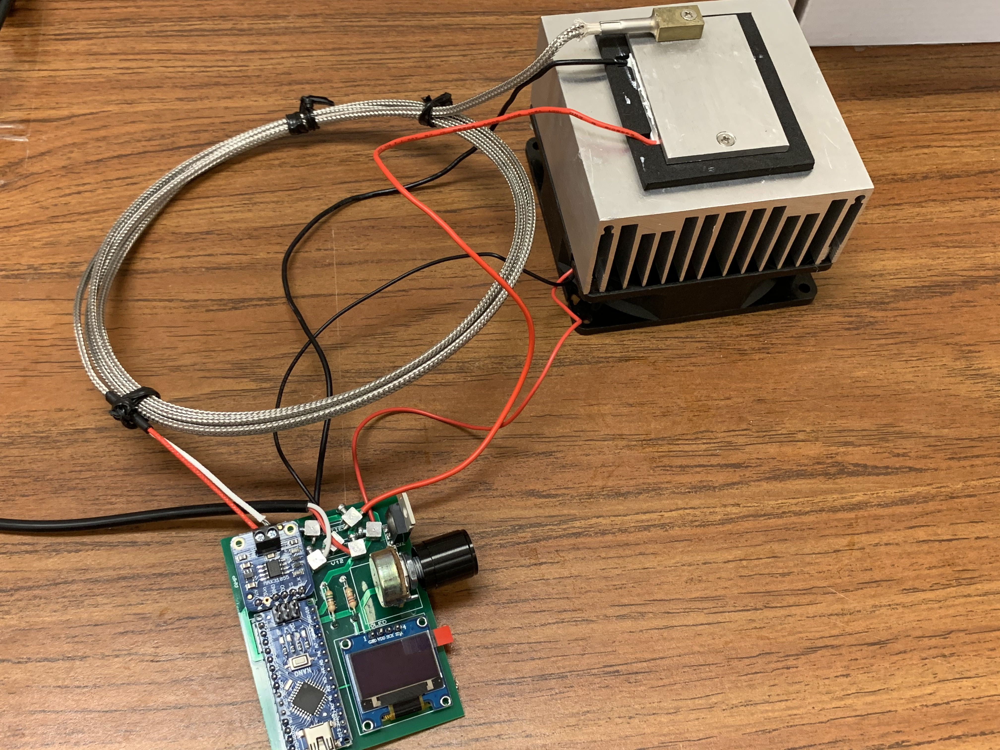

Projects


Pipeline for analyzing large population of cell activities
This project is a data processing pipeline which aims to automatically extract and analyze individual cell activity information from calcium imaging videos, in order to eliminate excessive manual effort and facilitate the study of biological questions regarding enteroendocrine cells in the mid-gut of Drosophila melanogaster (fruit fly). While the pipeline is fine-tuned for this study, it still has the potential to be applied onto imaging videos of other tissues or animals.
This project can be separated into two main parts: extracting individual cell activities and further analysis of these activities. The project is still under active development.
Olfactory Virtual Reality for Flies
This project is an olfactory VR system to measure odor-guided behaviors in Drosophila melanogaster (fruit fly). The system consists of three parts: a spherical treadmill, an olfactometer (to deliver odor in a controlled manner), and a feedback system (to update the delivery of odor based on the fly’s position in the virtual world).
This system is designed to be compatible with multi-photon imaging so that the neuron activity in fly's brain can be recorded together with its behavioral activities.
Feedback Temperature Control System for Fruit Fly Surgery
A feedback control system is built to keep the temperature of a metal holding rig cold enough to anesthetize the fly for surgeries such as opening the head or the back under the microscope.
More Coming!
This page is still under construction. I am still working on summarizing projects that I have done. Please check this page later for more updates!